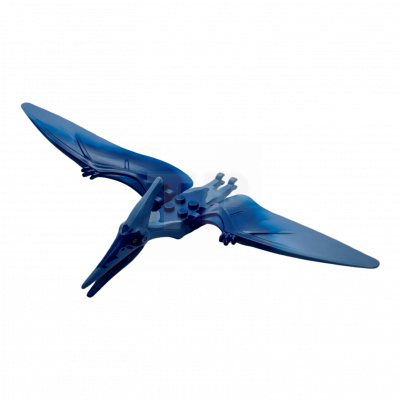

Umm Dinosaurier
Pteranodon
Der Pteranodon, dessen Name so viel wie "Flügel ohne Zahn" bedeutet, war eine faszinierende Gruppe von fliegenden Reptilien, die vor Millionen von Jahren während der Kreidezeit die Lüfte bevölkerten. Pteranodons gehören zur Gruppe der Pterosaurier, die nicht wirklich Dinosaurier waren, sondern separate, faszinierende Kreaturen der prähistorischen Welt.
Diese majestätischen Flugsaurier hatten beeindruckende Flügelspannweiten, die bis zu 7 Meter erreichen konnten. Sie verfügten über leichte, hohle Knochen und eine spezielle Membran, die ihre Flügel spannte, was es ihnen ermöglichte, durch die Lüfte zu gleiten und nach Fisch in den urzeitlichen Meeren zu suchen. Trotz ihrer enormen Größe und beeindruckenden Flugfähigkeiten ernährten sich Pteranodons hauptsächlich von Fisch, den sie mit ihren scharfen Schnäbeln aus dem Wasser griffen.
Obwohl Pteranodon keine Dinosaurier waren, sind sie dennoch faszinierende Geschöpfe, die unsere Vorstellungskraft beflügeln, wenn wir uns die prähistorische Welt vorstellen. Ihre Anpassungen an das Fliegen und ihre Größe machen sie zu den größten fliegenden Lebewesen, die je auf der Erde existierten, und sie sind ein faszinierendes Kapitel in der Geschichte der Evolution.
